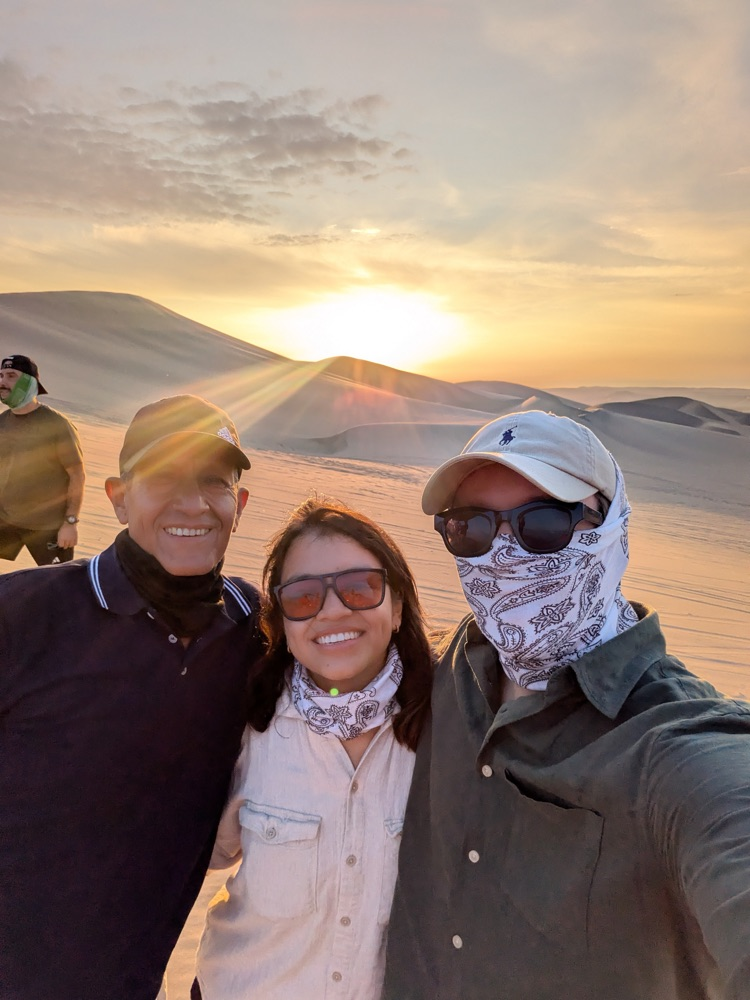
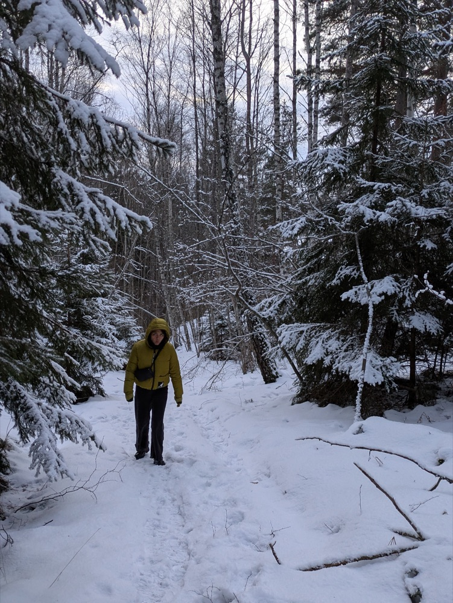
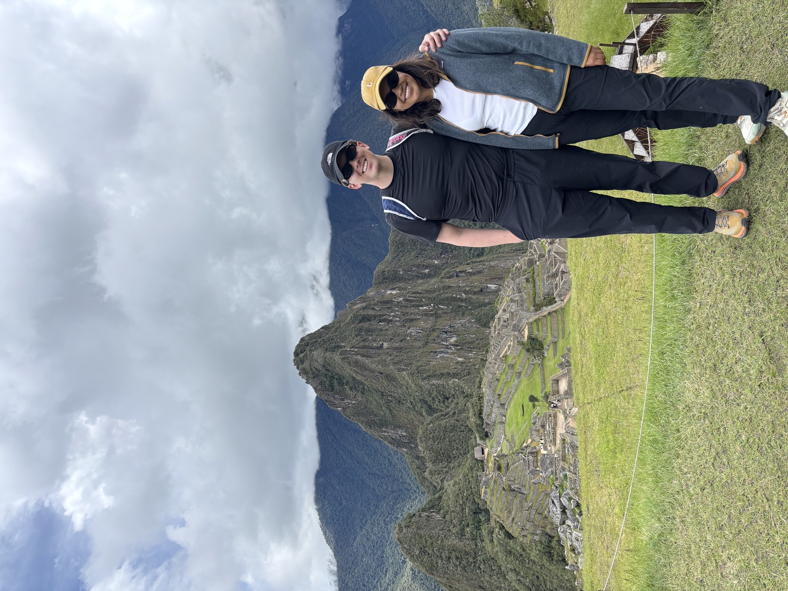
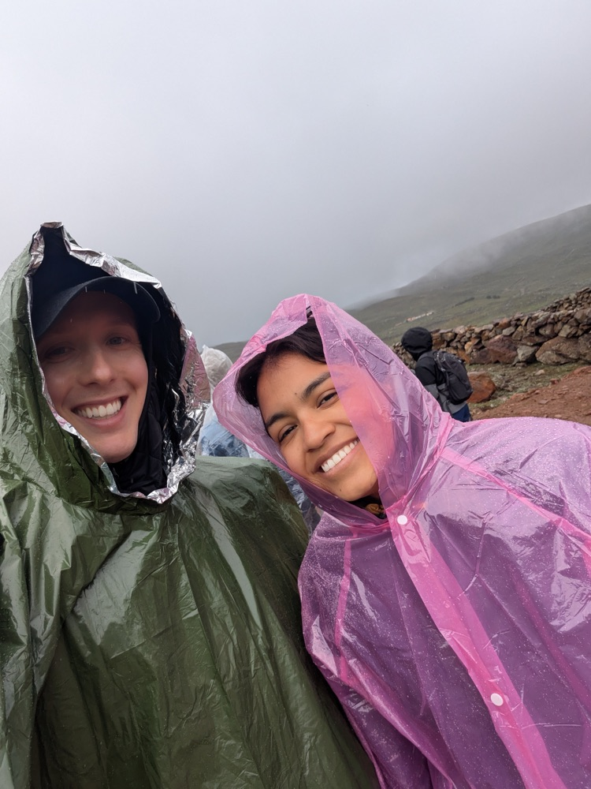
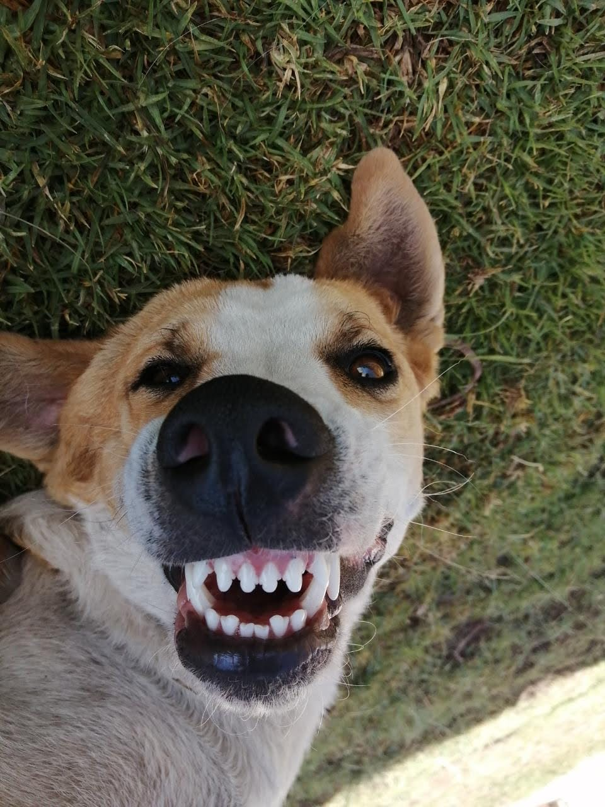

Analytical by heart.
Creative by nature.
I turn curiosity into questions, data into insights, and ideas into action.
Go to Business Cases ↓Marketing → Business
(+ spreadsheets)
& a good amaretto sour
From Lima to Stockholm,
From Medicine to Operations

My career was not linear. I started studying Medicine, driven by my vocation for service. Seven semesters later, I realized something: I still wanted to contribute to people's lives, just in a different way.
So I changed paths.
I moved into Business and Marketing, started my career in a small tech company in Peru, and eventually moved across the world to Stockholm, where I found my way into Operations. Along the way came new countries, industries and challenges, and new things to obsess over: business, strategy, data, and solving problems that don't have an obvious answer.
A lot changed. The way I am didn't.
I am still curious, proactive and probably a bit too excited by a new challenge. I like learning, making things happen and being around people who make me see things differently. New environments don't scare me much, if anything, they make me curious about what I can learn there.
I also tend to analyze almost everything, even my own thoughts when journaling. Not to stay thinking forever, but to understand, find patterns, make a decision and move.
And underneath all the changes, one thing has stayed particularly important to me: contributing to the world and, one day, bringing more of what I learn back to Peru.
A few favorite things
The life behind the dashboards: dogs, reading, matcha, journaling, and adventures with my partner, family and friends.





My approach to solving problems
Problem
↻ Learn feeds back into Frame — the cycle never really ends.
↻ Learn feeds back into Frame — the cycle never really ends.
Case studies
More case studies, warming up
I have additional stories I'd love to walk you through in person:
- Design Awards Strategy
- Brand Expression Insights
- Market Forecast for Small Domestic Appliances
You made it this far
Might as well say hi. My inbox is always open, especially for roles where strategy meets systems.
Say hola